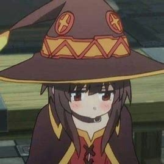

Megumin
Única personagem decente


Sobre
Megumin é totalmente obcecada com magia de explosão, investindo todas as suas estatísticas aumenta em seu feitiço de explosão porque ela acha que toda a magia era basicamente inútil, apesar do feitiço drenar toda a sua energia após um uso e ser geralmente impraticável.
Ela se recusa a aprender qualquer outro tipo de magia, rotineiramente voando em face de toda a lógica para proteger sua magia de explosão.
Por causa de sua obstinência, nenhum outro partido a terá apesar de Crimson Magic Clan ser conhecido por seus poderosos magos, e Kazuma só a aceitou depois que ela o chantageou.